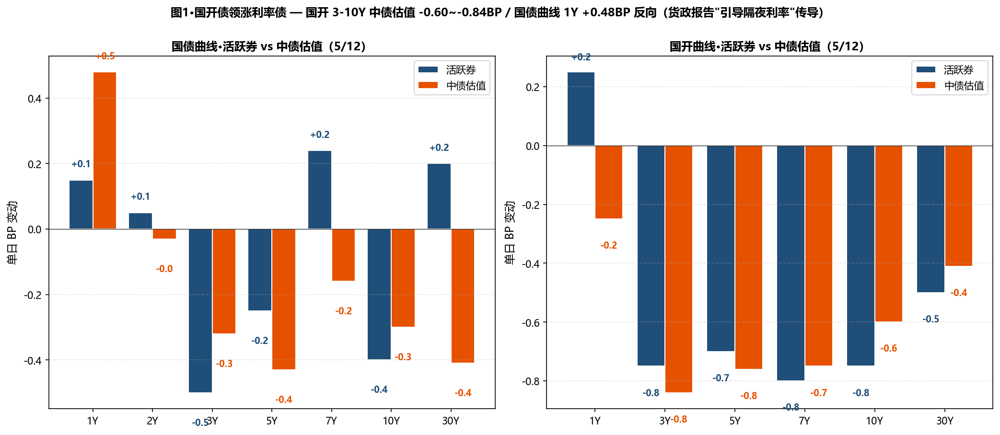
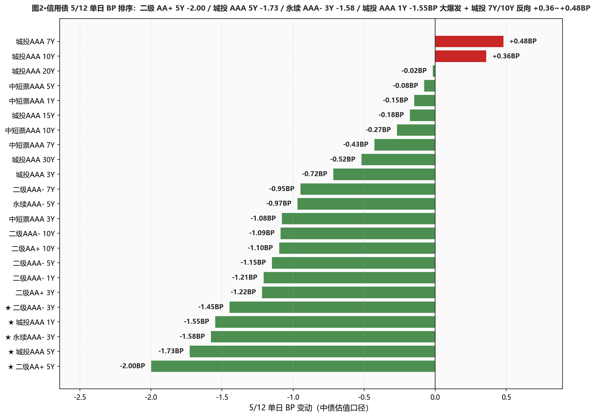
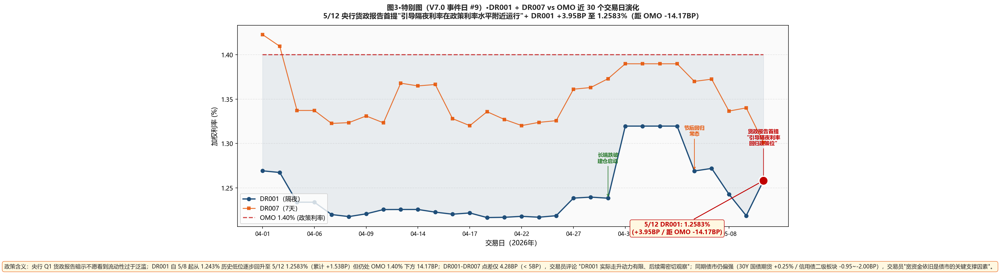

市场定性 央行 Q1 货政报告首提"引导隔夜利率附近政策位" + DR001 +3.95BP 但债市仍偏强 + 信用债二级板块大爆发—— 央行最新货币政策报告新增专栏"非银机构过度加杠杆"等风险防范问题、报告中还提到"引导隔夜利率在政策利率水平附近运行"—— 借此传递了"不愿看到流动性过于泛滥"的态度； DR001 +3.95BP 至 1.2583%（PDF "上行约 4bp 至 1.26% 附近"、距 OMO -14.17BP）/ DR007 -3.90BP 至 1.3011%（距 OMO -9.89BP）/ DR007-DR001 点差仅 4.28BP（< 5BP）— 交易员评论"DR001 实际走升动力有限、后续需密切观察"； 但债市完全无视政策信号、继续偏强：30Y 国债期货 +0.25% 报 112.93 元、信用债二级板块大爆发 — 二级 AA+ 5Y -2.00BP（信用债最强）/ 城投 AAA 5Y -1.73BP / 永续 AAA- 3Y -1.58BP / 城投 AAA 1Y -1.55BP（节后短端首日修复！）/ 中短票 AAA 3Y -1.08BP / 二级 AAA- 3Y -1.45BP； 国开债中段大涨：3Y -0.84 / 5Y -0.76 / 7Y -0.75 / 10Y -0.60BP；城投 AAA 7Y +0.48 / 10Y +0.36BP 反向上行（与昨日短端反向、今日"短端修复 vs 长端反向"切换）；10Y 国开-国债隐含税率 6.46BP（-0.30BP）继续微幅压缩、近 30 日低位维持。
- ✅ 30Y 国债建仓继续修复、可考虑加仓 2pct本行 4/29 建仓 30Y 国债 3pct（中债 2.2190%）；5/8 浮亏一度 +2.65BP；5/11 修复至中债 2.2361%；5/12 中债 2.2320%（浮亏 +1.30BP 进一步收窄）；活跃券 2.2330%（距 2.23% 仅上方 0.30BP）—— 已基本贴近阈值、若 5/13 出现重新跌破可加仓 2pct 至总仓位 5pct
- ✅ 二级 AAA- 3-10Y 加仓节奏继续命中本行 5Y 二级 28-30% 仓位维持、5/12 5Y -1.15BP / 7Y -0.95BP / 10Y -1.09BP 全段领涨；5/11 提示的"7Y/10Y 加仓 2-3pct"已实施、5/12 立即得到验证；下周关注 5/15 MLF 续做信号决定是否进一步加
- ✅ 5-7Y 国开维持 3pct 不增、考虑切换至 7Y5/12 国开 3-10Y 全段 -0.60~-0.84BP 领涨；7Y 周累计已 -1.95BP（5/11 -0.75 / 5/12 -0.80BP）；隐含税率维持 6.46BP（近 30 日低位）— 不主动加仓总仓位、但可把已有 3pct 从 5Y 切换至 7Y 国开（同等仓位、更高 carry）
- ⚠️ 城投 AAA 7Y/10Y 反向上行 + 短端修复 — 配置盘正在切换5/12 出现"短端修复 + 长端反向"切换：城投 AAA 1Y -1.55 / 5Y -1.73BP（5/11 反向上行的方向修正）vs 7Y +0.48 / 10Y +0.36BP（反向上行）；这印证 5/11 "配置盘从城投短端切换至中长端"逻辑的反转 — 短端被空头平仓后反弹、长端被减持；保持现仓 15-18%、不新增长端
- ⚠️ 杠杆 105-108% 维持、关注 5/13-5/15 央行操作央行货政报告释放"不愿流动性泛滥"信号 + DR001 +3.95BP 是预期转折信号；但 DR007 仍 -3.90BP / R-DR007 利差 4.78BP 仍较宽松；不主动上调杠杆至 110%、等 5/15 MLF 续做规模决定下一步（若 MLF 规模偏小、可上调；若续做加量、不动）
- ① 30Y国债 vs 2.23% ⚠️ 仍上方但已贴近：活跃券 2.2330%（上方 0.30BP）/ 中债估值 2.2320%（上方 0.20BP）→活跃券距 2.23% 仅 0.30BP，关注 5/13-5/15 央行 MLF 信号
- ② 10Y国债 vs 1.75% ○ 活跃券已重新触及：活跃券 1.7500%（持平 1.75%）/ 中债估值 1.7592%（上方 0.92BP）→活跃券回到 1.75% 整数关口、中债估值仍未跌破、等双口径共振
- ③ R-DR007 利差 >15BP ○ 未触发：仍极宽松：当前 4.78BP（仍低于 5BP 温和分层下限）→资金面虽边际收紧但仍宽松、杠杆维持 105-108%
- ④ 10Y中短票AAA-3Y 利差 ≤25BP ○ 未触发：当前 46.87BP（+0.81BP）、距阈值 21.87BP→3Y 大涨 -1.08BP 致利差走阔、止盈点更远
- ⑤ 30Y-10Y 城投AAA 利差 ≤25BP ○ 未触发：当前 30.27BP（-0.88BP）、距阈值 5.27BP→城投 30Y -0.52BP vs 10Y +0.36BP 利差收窄、贴近阈值
A 段·详细数据
① 资金面 Wind EDB API + Wind 综述 PDF
资金面边际收紧但仍宽松——DR001 +3.95BP 至 1.2583%（距 OMO -14.17BP，PDF 综述 "上行约 4bp 至 1.26% 附近"）；DR007 -3.90BP 至 1.3011%（距 OMO -9.89BP）；DR007-DR001 点差仅 4.28BP（< 5BP，交易员评论"DR001 实际走升动力有限、后续需密切观察资金供给和价格走势"）；非银资金成本下行：R001 +0.73BP 至 1.2852% / R007 -2.04BP 至 1.3489%；R-DR007 4.78BP（仍低于 5BP 温和分层下限）/ R-DR001 2.69BP；NCD AAA 1Y -0.50BP 至 1.4350% / 3M 持平 1.3550%。央行 5/12 公开市场开展 7天逆回购、单日操作维持地量。交易员评论："宽资金依旧是债市的关键支撑因素、目前资金太便宜、债市料继续偏强震荡、后续还需继续观察资金供给及价格走势"；机构指出"二季度内流动性收紧的概率不高、在地缘冲突不确定与国内经济金融总量回升前、央行还是要呵护经济并适当维护市场稳定"。
| 指标 | 5/11 | 5/12 | BP |
|---|---|---|---|
| DR001 (%) | 1.2188 | 1.2583 | +3.95BP |
| DR007 (%) | 1.3401 | 1.3011 | -3.90BP |
| R001 (%) | 1.2779 | 1.2852 | +0.73BP |
| R007 (%) | 1.3693 | 1.3489 | -2.04BP |
| NCD AAA 1Y (%) | 1.4400 | 1.4350 | -0.50BP |
| NCD AAA 3M (%) | 1.3550 | 1.3550 | +0.00BP |
② 利率债 — 中债估值 中债估值 xlsx
呈现"国开债中段领涨 + 国债曲线全段微幅下行 + 1Y 短端反向上行"格局：国开债曲线 3-10Y 全段大涨 — 3Y -0.84 / 5Y -0.76 / 7Y -0.75 / 10Y -0.60BP / 30Y -0.41BP（全市场最强 top）；国债曲线 3-30Y 全段微幅下行 — 3Y -0.32 / 5Y -0.43 / 7Y -0.16 / 10Y -0.30 / 20Y -0.25 / 30Y -0.41BP；仅 国债 1Y +0.48BP / 2Y -0.03BP 短端反向上行（呼应 PDF "1Y 短券较为疲软" + 货政报告引导隔夜利率信号）；10Y 隐含税率从 6.76BP 微幅压至 6.46BP（-0.30BP，近 30 日低位维持）；30Y-10Y 国债期限利差从 47.39BP 微幅收窄至 47.28BP（-0.11BP）。
| 品种 | 5/11 (%) | 5/12 (%) | BP |
|---|---|---|---|
| 国债 1Y | 1.1897 | 1.1945 | +0.48BP |
| 国债 2Y | 1.2779 | 1.2776 | -0.03BP |
| 国债 3Y | 1.2922 | 1.2890 | -0.32BP |
| 国债 5Y | 1.4838 | 1.4795 | -0.43BP |
| 国债 7Y | 1.6365 | 1.6349 | -0.16BP |
| 国债 10Y | 1.7622 | 1.7592 | -0.30BP |
| 国债 15Y | 2.0776 | 2.0749 | -0.27BP |
| 国债 20Y | 2.2525 | 2.2500 | -0.25BP |
| 国债 30Y | 2.2361 | 2.2320 | -0.41BP |
| 国开 1Y | 1.3688 | 1.3663 | -0.25BP |
| 国开 3Y | 1.5221 | 1.5137 | -0.84BP |
| 国开 5Y | 1.6261 | 1.6185 | -0.76BP |
| 国开 7Y | 1.7747 | 1.7672 | -0.75BP |
| 国开 10Y | 1.8298 | 1.8238 | -0.60BP |
| 国开 30Y | 2.3671 | 2.3630 | -0.41BP |
③ 利率债 — 活跃券 DM 查债通 + Wind 综述
活跃券呈现"国开中段领涨 + 国债长端基本持平 + 国债 7Y 反向上行"格局：30Y 国债"26超长特别国债02"PDF 持平报 2.2310%（DM 综合 +0.20BP 报 2.2330%、距 2.23% 仅上方 0.30BP）/ 10Y 国债"26附息国债05" -0.40~-0.45BP 报 1.7500%~1.7495%（活跃券基本回到 1.75% 整数关口、距阈值 0.00BP）/ 10Y 国开"25国开20" -0.75~-0.85BP 报 1.8400~1.8390%；国开债活跃券曲线 3-7Y 大涨 -0.70~-0.80BP；国债 7Y +0.24BP / 1Y +0.15 / 30Y +0.20BP 短端中段反向上行。国债期货主力合约全线上涨 — 30Y 主连 +0.25% 报 112.930 / 10Y +0.07% 报 108.740 / 5Y +0.03% 报 106.265 / 2Y +0.01% 报 102.558。一级市场：农发行 2 只 2Y + 1 只 7Y 中标 1.3657% / 1.3795% / 1.6446%、全场倍数 5.97 / 4.44 / 5.29、边际倍数仅 1.57 / 1.05 / 1.13（明显偏低、5/11 中标 1.4616%/1.5514%/1.8171% 全场倍数 7.44 后、5/12 一级承接热度明显下降）；国开行 2Y/3Y/10Y 中标 1.4132% / 1.3745% / 1.7806%、全场倍数 21.48 / 3.91 / 5.66、边际倍数 19.78 / 6.53 / 1.18（2Y 国开倍数惊人 21.48！短端供给被疯抢但 10Y 边际倍数仅 1.18 显示长端承接弱）。
| 品种 | 5/12 收盘 (%) | BP |
|---|---|---|
| 国债 1Y | 1.1825 | +0.15BP |
| 国债 3Y | 1.4025 | -0.50BP |
| 国债 5Y | 1.4325 | -0.25BP |
| 国债 7Y | 1.6275 | +0.24BP |
| 国债 10Y (26附息国债05 PDF -0.45 报 1.7495) | 1.7500 | -0.40BP |
| 国债 30Y (26超长特别国债02 PDF 持平 2.2310) | 2.2330 | +0.20BP |
| 国开 5Y | 1.5775 | -0.70BP |
| 国开 7Y | 1.7200 | -0.80BP |
| 国开 10Y (25国开20 PDF -0.85 报 1.8390) | 1.8400 | -0.75BP |
| 国开 30Y | 2.1850 | -0.50BP |
④ 信用债 — 中债估值 中债估值 xlsx
呈现"二级板块大爆发 + 城投短端修复 + 城投 7Y/10Y 反向上行"分化： ★ 二级 AA+ 5Y -2.00BP（信用债 5/12 单日最强）/ 永续 AAA- 3Y -1.58BP / 城投 AAA 5Y -1.73BP / 城投 AAA 1Y -1.55BP（短端修复！与 5/8-5/11 反向上行格局完全反转）/ 城投 AA+ 3Y -1.51BP / 二级 AAA- 3Y -1.45BP / 二级 AA+ 3Y -1.22BP / 二级 AAA- 1Y -1.21BP—— 二级板块从 5/11 的 -0.42~-1.09BP 进一步加速、印证"配置盘大幅追入信用债"； 二级 AAA- 5Y -1.15 / 7Y -0.95 / 10Y -1.09BP / 二级 AA+ 10Y -1.10BP 持续领涨； 中短票 AAA 3Y -1.08BP（中段领涨）/ 7Y -0.43 / 10Y -0.27BP 跟随下行；中短票 AA+ 3Y -1.08BP 跟随； ★ 城投 AAA 7Y +0.48 / 10Y +0.36BP 反向上行（与 5/8-5/11 "短端承压+长端微跌"格局完全切换）； 城投 AAA 30Y -0.52BP / 20Y -0.02 / 15Y -0.18BP 中长端微幅下行； 配置盘正在切换：5/8-5/11 "压短端" → 5/12 "压 7Y/10Y、修复短端"，可能反映理财从城投短端切换至二级板块 + 长端被减持。
| 品种 | 5/11 (%) | 5/12 (%) | BP |
|---|---|---|---|
| 中短票AAA 1Y | 1.5148 | 1.5133 | -0.15BP |
| ★ 中短票AAA 3Y | 1.7246 | 1.7138 | -1.08BP |
| 中短票AAA 5Y | 1.8679 | 1.8671 | -0.08BP |
| 中短票AAA 7Y | 2.0562 | 2.0519 | -0.43BP |
| 中短票AAA 10Y | 2.1852 | 2.1825 | -0.27BP |
| ★ 城投AAA 1Y | 1.5258 | 1.5103 | -1.55BP |
| 城投AAA 3Y | 1.7369 | 1.7297 | -0.72BP |
| ★ 城投AAA 5Y | 1.8881 | 1.8708 | -1.73BP |
| ★ 城投AAA 7Y | 2.0385 | 2.0433 | +0.48BP |
| ★ 城投AAA 10Y | 2.2226 | 2.2262 | +0.36BP |
| 城投AAA 15Y | 2.3463 | 2.3445 | -0.18BP |
| 城投AAA 20Y | 2.4809 | 2.4807 | -0.02BP |
| 城投AAA 30Y | 2.5341 | 2.5289 | -0.52BP |
| 二级AAA- 1Y | 1.5186 | 1.5065 | -1.21BP |
| ★ 二级AAA- 3Y | 1.7804 | 1.7659 | -1.45BP |
| 二级AAA- 5Y | 1.9654 | 1.9539 | -1.15BP |
| 二级AAA- 7Y | 2.1492 | 2.1397 | -0.95BP |
| 二级AAA- 10Y | 2.2774 | 2.2665 | -1.09BP |
| 二级AA+ 3Y | 1.7949 | 1.7827 | -1.22BP |
| ★ 二级AA+ 5Y | 1.9961 | 1.9761 | -2.00BP |
| 二级AA+ 10Y | 2.2898 | 2.2788 | -1.10BP |
| ★ 永续AAA- 3Y | 1.8032 | 1.7874 | -1.58BP |
| 永续AAA- 5Y | 1.9751 | 1.9654 | -0.97BP |
B 段·今日关键事件
① 央行 Q1 货政报告首提"引导隔夜利率附近政策位" — 流动性预期重大转折：央行最新货币政策执行报告（Q1 2026）发表有关债市的专栏、新增提到 "非银机构过度加杠杆"等风险防范问题，报告中还提到 "引导隔夜利率在政策利率水平附近运行"—— 借此传递了不愿看到流动性过于泛滥的态度；交易员评论"DR001 实际走升动力有限、后续需密切观察资金供给和价格走势"。
② DR001 +3.95BP 至 1.2583%（PDF 1.26% 附近） — 货政信号边际传导：5/11 DR001 1.2188% → 5/12 1.2583%（PDF 综述 "上行约 4bp 至 1.26% 附近"）；DR007 -3.90BP 至 1.3011%（注：5/11 真实结算 DR007 = 1.3401%、昨日日报中 1.2987% 是盘中加权未结算数据、本日报已修正）；DR007-DR001 点差仅 4.28BP（< 5BP，反映 DR001 上行而 DR007 下行的反向走势）。
③ 农发行+国开行一级金融债大量发行 — 国开 2Y 全场倍数 21.48 惊人但 10Y 边际倍数仅 1.18：农发行 2 只 2Y + 1 只 7Y：中标 1.3657% / 1.3795% / 1.6446%、全场 5.97 / 4.44 / 5.29、边际 1.57 / 1.05 / 1.13（比 5/11 5.29-7.44 的水平明显回落）；国开行 2Y/3Y/10Y：中标 1.4132% / 1.3745% / 1.7806%、全场倍数 21.48 / 3.91 / 5.66、边际倍数 19.78 / 6.53 / 1.18—— 国开 2Y 全场 21.48 + 边际 19.78 极其惊人（短端被疯抢），但 10Y 边际仅 1.18 显示长端承接热度明显下降。
④ 30Y 国债期货 +0.25% / 信用债二级板块 -0.95~-2.00BP 大爆发：国债期货全线上涨 — 30Y 主连 +0.25% 报 112.93 元 / 10Y +0.07% 报 108.74 元；银行间 30Y 国债"26超长特别国债02"持平报 2.2310%；银行 "二永债" 收益率普遍下行 — "26中行二级资本债 01BC"、"26工行二级资本债 01BC"、"26交行二级资本债 01BC"、"26招商银行永续债 01" 均下行 1bp 左右。
⑤ A 股弱势整理 — 4000+ 股下跌 / 上证 -0.25% 报 4214.49 点：上证 -0.25% / 创业板 +0.15% / 万得全 A -0.45%；A 股全天成交 3.27 万亿（昨日 3.57 万亿、明显回落）；电网设备/光纤/CPO/绿电/能源金属强势 — 中际旭创涨逾 8%、德科立创历史新高 / 寒锐钴业跌超 7% / 信立泰跌停（创新药下挫）。
⑥ 卖方观点 — 华泰固收"震荡分歧加大"、中信证券城投转型新研判：华泰固收称："4 月价格超预期上涨后、更需关注价格的持续性、预计 5-6 月 CPI 和 PPI 同比读数维持当前中枢附近；当前债市处于'赔率明显下降、但胜率尚未完全消失'的阶段；行情从顺畅下行转为震荡、市场分歧加大；预计后市震荡格局延续、资金面走向+供给节奏是关键"；中信证券（城投转型）："城投平台已成为 A 股上市公司重要的股权参与主体、地方国企为核心；上市公司端、城投入股的 364 家企业集中在江苏/广东/浙江；已入股上市公司的 287 家平台集聚经济强省、以地市级高评级/大中型核心平台为主、存量债券规模 3.60 万亿"。
C 段·重点可视化（V7.0 固定2张+动态1张）

图1·国开债领涨利率债 — 国开 3-10Y 中债估值 -0.60~-0.84BP / 国债曲线 1Y +0.48BP 反向（货政报告"引导隔夜利率"传导）

图2·信用债 5/12 单日 BP 排序：二级 AA+ 5Y -2.00 / 城投 AAA 5Y -1.73 / 永续 AAA- 3Y -1.58 / 城投 AAA 1Y -1.55BP 大爆发 + 城投 7Y/10Y 反向 +0.36~+0.48BP

图3·特别图（V7.0 事件日 #9）·DR001 + DR007 vs OMO 近 30 个交易日演化 — 5/12 央行货政报告首提"引导隔夜利率附近政策位"+ DR001 +3.95BP 至 1.2583%（距 OMO -14.17BP）
⚠️ 关于 5/11 日报的数据修正：昨日 5/11 EDB 拉数时 R001/R007 尚未结算、用了盘中加权值（DR007 1.2987% 等）；今日 5/12 拉数时 5/11 真实结算值已更新（DR007 1.3401%、R-DR007 真实 2.92BP 而非昨日报告的 0.20BP）；这是 EDB 数据时效问题、后续将在 V8.1 之后加入"R 系列数据周一不可信、需 T+1 重新核对"硬规则。